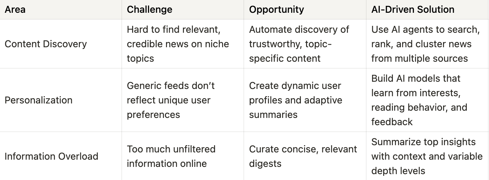
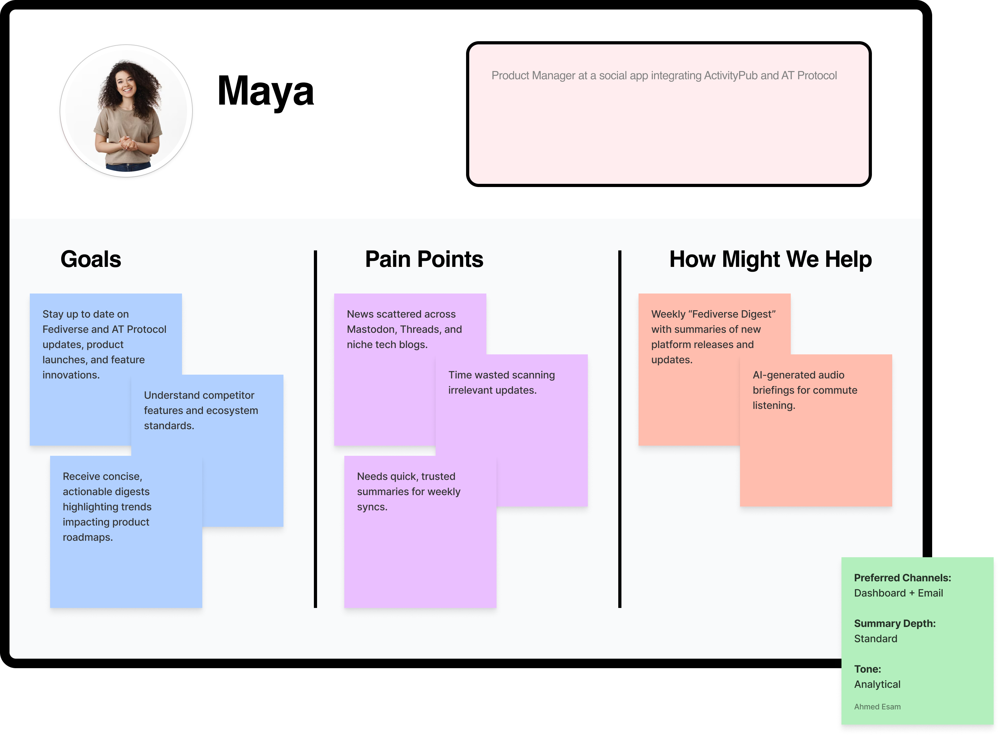
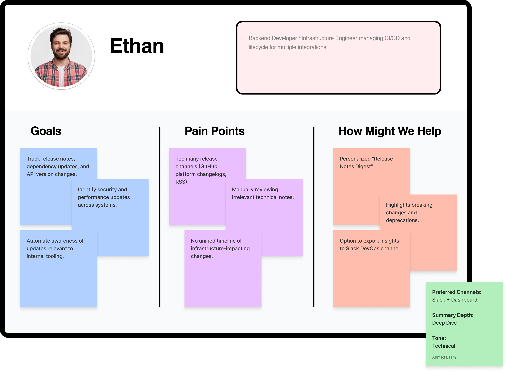
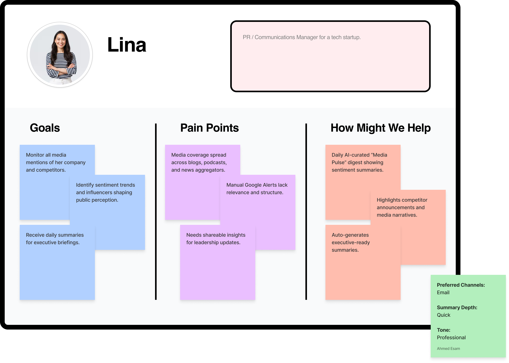
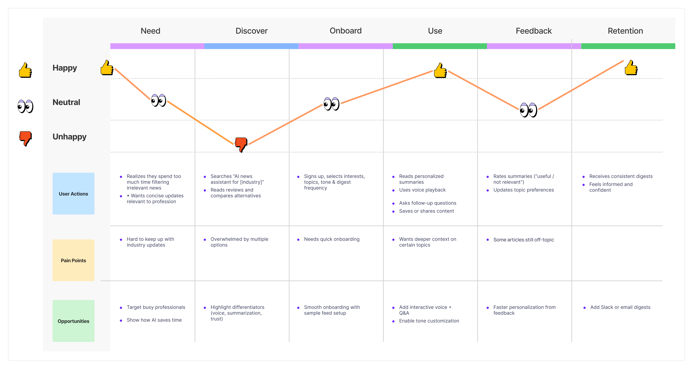
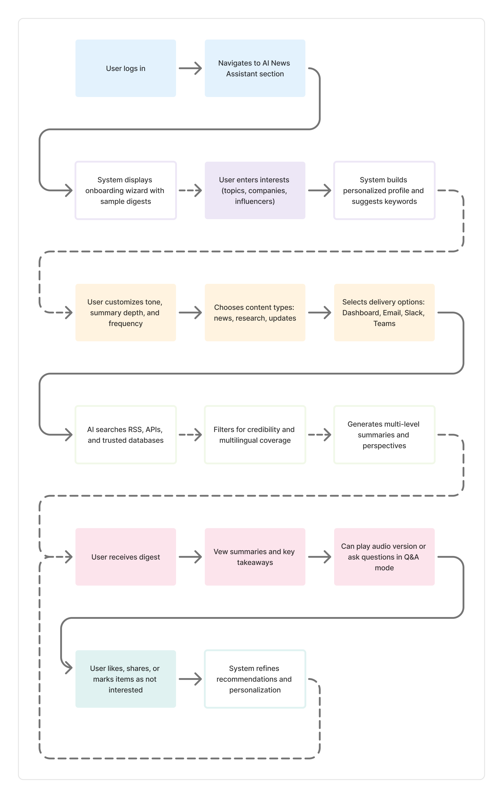
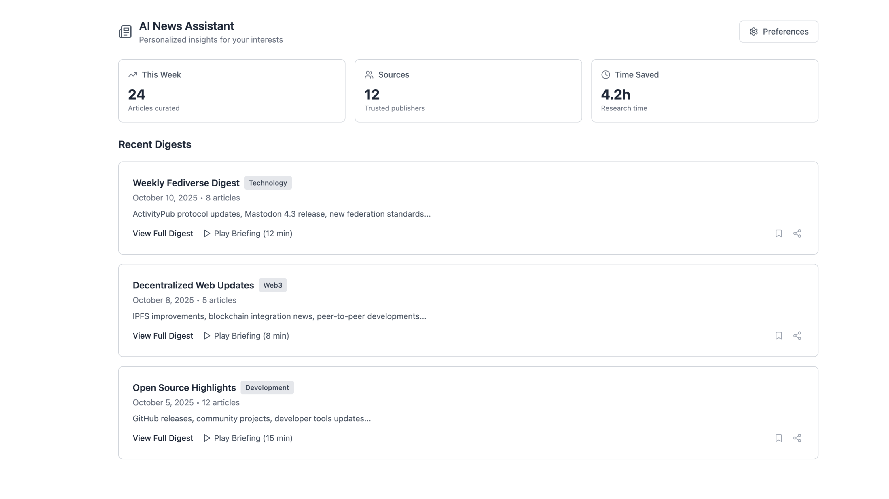
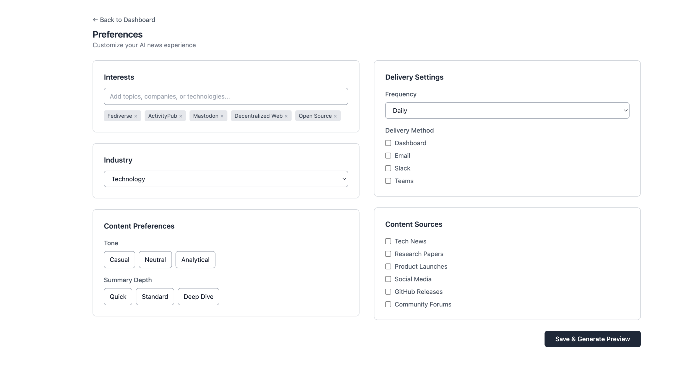
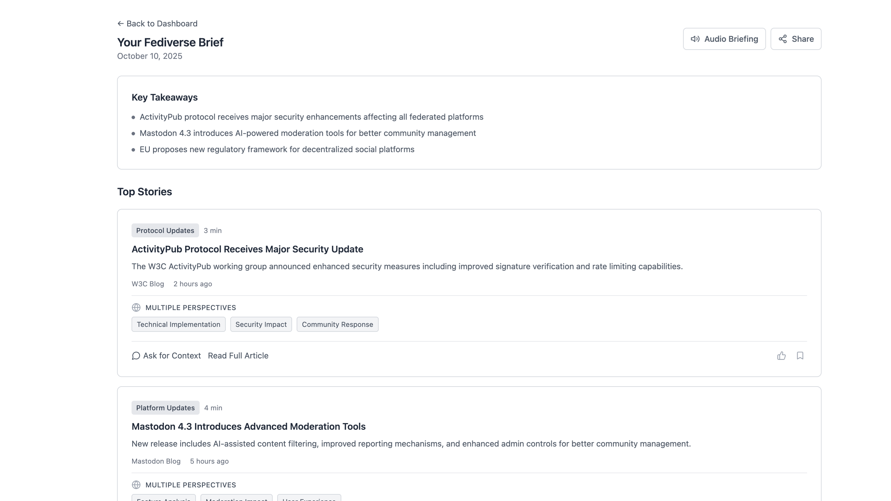
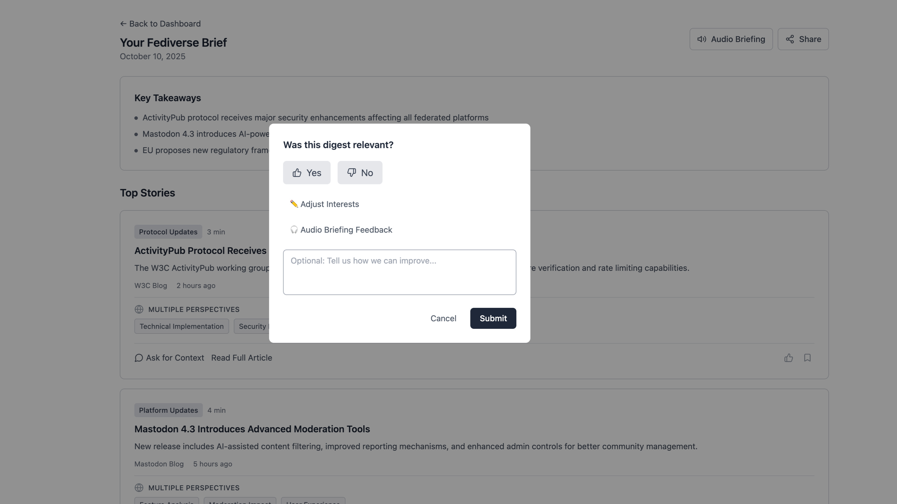

Personalized AI News Assistant
An AI-driven product concept that helps users cut through news overload with personalized summaries and context.
Overview
The Personalized AI News Assistant is a concept product designed to help users stay informed without being overwhelmed. The idea was to explore how AI can summarize, personalize, and contextualize news based on user interests—while remaining transparent, useful, and trustworthy.
I owned the product concept end to end, from problem definition and user needs to AI interaction design and experience validation.
Problem
News consumption today is overwhelming. Users are flooded with content across platforms, context is fragmented, and personalization often optimizes for engagement rather than understanding.
Question
How might we help users stay informed without overwhelming them, while keeping personalization transparent, contextual, and trustworthy?
Answer (TL;DR)
I designed a concept AI-powered news assistant that summarizes and personalizes news based on user interests—exploring how AI can support informed decision-making instead of information overload.
Goal
Design a lightweight AI-powered assistant that:
- Delivers personalized news summaries
- Helps users understand why a topic matters
- Reduces noise while preserving editorial transparency
My Role & Responsibilities
I owned the product end-to-end:
- Defined the product vision and value proposition
- Conducted lightweight user and market research
- Designed the core user flows and UX
- Defined success metrics and experimentation ideas
- Explored AI feasibility and constraints
- Built a working concept to validate assumptions
Discovery & Research
I analyzed existing solutions (news aggregators, newsletters, AI summaries) and found gaps:
- Strong at aggregation, weak at personal relevance
- AI summaries often lack source clarity
- Few tools explain why a story is important

Early research showed that news overload affects users differently depending on their motivations, habits, and tolerance for complexity.
Personas
To build a deeper understanding of our users’ goals, needs, and behaviors, I created three personas representing our key user segments.



Product Concept
The assistant is designed around three core principles:
User Journey
I mapped the end-to-end user journey to understand how users discover, consume, and reflect on news using the product.

Key Insight
While analyzing the User Journey, I discovered a recurring emotional contradiction that became the “North Star” for this project:
Users felt a persistent “Information Guilt,” viewing news consumption as a duty rather than a choice.
I shifted focus from better filters to Contextual Consumption. I replaced the static feed with “Intent Modes”—offering instant Catch-ups for busy moments and Deep Dives for focused reading.
User Flow
I designed a clear user flow to ensure the experience felt simple, predictable, and intentional.

Wireframes
I designed wireframes to validate user flows, priorities, and functional requirements before visual design.




Metrics & Success Criteria
To evaluate product success, I defined early metrics:
North Star Metric
% of users who read the daily brief at least 3 times per week
Supporting Metrics
- Summary-to-article open rate
- Topic relevance feedback
- Retention after 7 and 30 days
- Preference refinement frequency
To deepen my understanding of AI agents and LLM-powered workflows, I decided to go beyond concept-level exploration and build a small, focused experiment.
Concept Validation: Technical Experiment
To test whether this concept was technically feasible and valuable, I built a lightweight News Research Agent using LangChain, Tavily, and LangGraph. The experiment focused on:
- Automating topic-based research
- Comparing multi-source outputs
- Evaluating summary quality and relevance
This experiment helped validate the core assumption: that structured AI agents can meaningfully reduce research effort while preserving context.
View on GitHubKey Learnings
This project reinforced my ability to reason about system design, user experience, and business value simultaneously when working with AI-powered products.
- Learned how to frame AI agents around real user needs rather than technical novelty.
- Rapid prototyping with LangChain and LangGraph clarified feasibility, limitations, and trade-offs early—reducing uncertainty before scaling.
Product thinking translates well when ideas move from concepts into validation.
Read more of my case studies

AT Protocol (Bluesky) Integration
AT Protocol integration feasibility and product strategy to future-proof Clip Symphony and expand decentralized content distribution.

Ninja — Grocery Delivery Experience Redesign
Improving clarity, communication, and confidence in a grocery delivery experience.

Implementing Subscription Features with Stripe
Delivering a scalable subscription and billing system for a SaaS product with Stripe integration.
Get in touch at
ahmedesam3ab@gmail.com